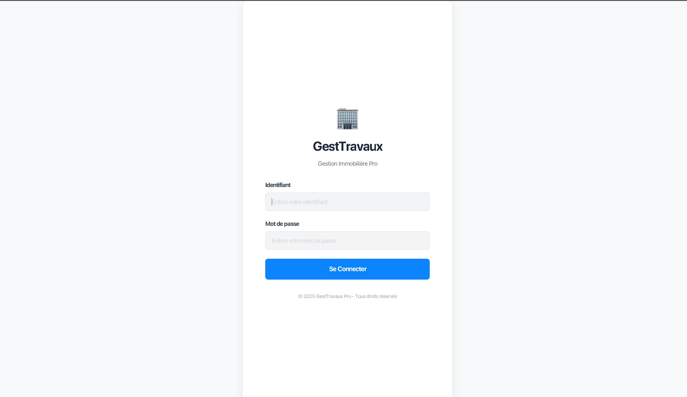
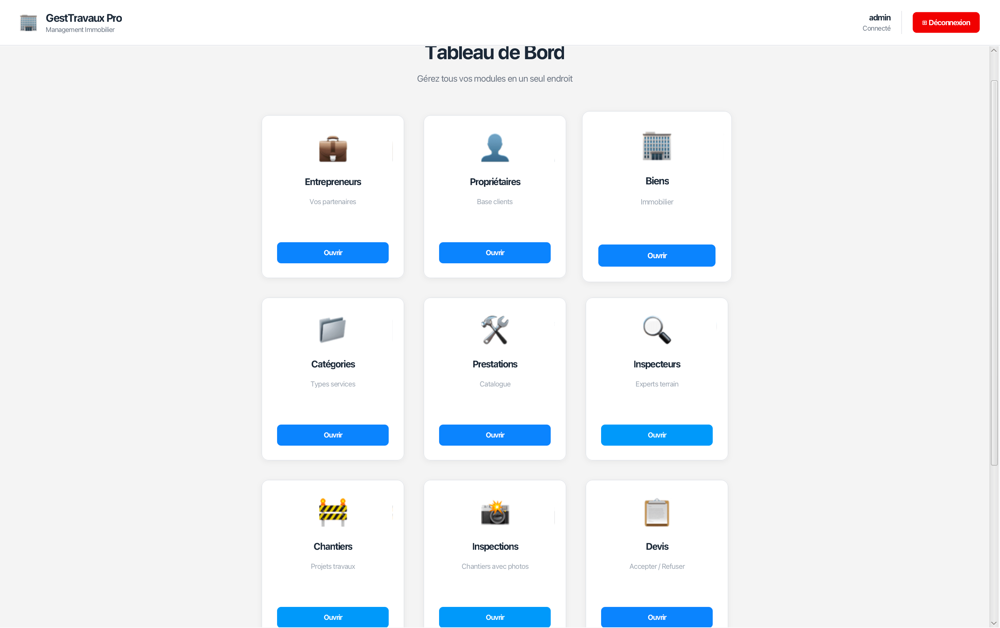
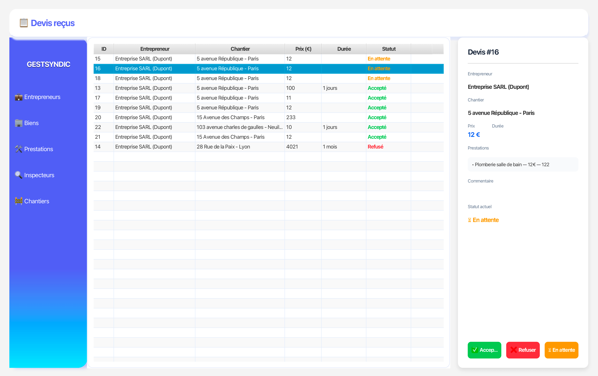

GestTravaux Pro - Desktop
Application desktop développée en JavaFX pour les gestionnaires et administrateurs du syndic IMMOSYNC. Pilotage complet des chantiers, gestion des comptes, workflow devis et prise de décision.
- Java / JavaFX
- PostgreSQL
- Interface desktop
- Connexion sécurisée BDD
- Gestion des rôles
Accès et authentification
L'application desktop nécessite une authentification sécurisée :
- Connexion base de données : accès direct PostgreSQL.
- Identifiants sécurisés : chiffrement des credentials.
- Interface de login : écran d'authentification professionnel.
Une fois authentifié, le gestionnaire accède au tableau de bord avec synchronisation temps réel des données de l'application web.
{kind=link}

Écran d'authentification de l'application desktop JavaFX avec connexion sécurisée à la base de données PostgreSQL.
Rôle de l'application desktop
L'application desktop JavaFX est destinée aux gestionnaires et administrateurs du syndic IMMOSYNC. Elle centralise le pilotage des chantiers et la prise de décision sur les devis.
Objectifs spécifiques
- Créer et gérer tous les comptes : entrepreneurs, inspecteurs, propriétaires.
- Créer les chantiers et les assigner à un inspecteur.
- Réceptionner les rapports d'inspection et définir un devis type à envoyer aux entrepreneurs.
- Accepter ou refuser les contre-devis soumis par les entrepreneurs.
- Assurer la cohérence des données avec l'application web Symfony.
{kind=link}

Interface desktop JavaFX avec tableau de bord gestionnaire
Fonctionnalités de gestion
Le gestionnaire dispose de toutes les fonctionnalités de pilotage :
- Gestion des comptes : création et gestion des comptes entrepreneurs, inspecteurs et propriétaires.
- Gestion des chantiers : création d'un chantier et assignation à un inspecteur.
- Workflow devis : après réception du rapport d'inspection, définition d'un devis type avec les prestations à réaliser, envoyé à un entrepreneur. Si l'entrepreneur soumet un contre-devis, le gestionnaire décide de l'accepter ou le refuser.
- Gestion des prestations : création et paramétrage des prestations disponibles.
L'administrateur dispose des mêmes droits que le gestionnaire, avec en plus la possibilité de créer des comptes gestionnaires.
{kind=link}

Module d'analyse comparative des devis avec critères multiples et aide à la décision pour les gestionnaires.
Architecture JavaFX
L'application desktop repose sur une architecture Java robuste :
- JavaFX : interface moderne pour desktop.
- Connexion PostgreSQL partagée : accès direct à la même base de données que l'application Symfony.
- Architecture MVC : séparation logique métier et présentation.
- Gestion des rôles : gestionnaire et administrateur avec droits distincts.
Compétences Java mises en avant :
- Développement d'applications desktop avec JavaFX.
- Connexion et manipulation de base de données PostgreSQL.
- Conception d'interfaces utilisateur métier.
Réalisations techniques
- Tableau de bord gestionnaire avec vue d'ensemble des chantiers
- Création et gestion des comptes (inspecteurs, entrepreneurs, propriétaires)
- Assignation des chantiers aux inspecteurs
- Définition et envoi de devis type aux entrepreneurs
- Acceptation ou refus des contre-devis entrepreneurs
- Compte administrateur avec création de comptes gestionnaires
- Connexion à la base de données PostgreSQL partagée avec Symfony